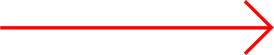

lives: 3
sorry homie, that's it
restart?
congrats family, you did that
restart?
1. the arriflex incandescent ____________
lmao fuck this shoud be an arrow">
fresnel
freznel
Sean Lewow
Fresnol
2. yeet or not yeet?
yoy
3. the ____________ of a dongfish is attached by a scungle to a type of ____________
1. yipple, skeeb
2. horngus, dillsack
3. blip, blop
4. shmeeb, ringle
4. objectively, what is the best flavor of odwalla?
cheese
dryer lint
red
windex
5. what time is it?
9:41AM
shower time, baby
Florida
there is no time variable in the fundamental equations that describe this world
6. crusty, musty, dusty, ________
rusty
busty
lusty
susty
6. how many more questions in this quiz?
1. 4
2. 14
3. 7
4. Finland
8. what fact about popular hardrock band nickelback is correct?
1. its chad kroeger, hoe
2. there have been 8 members in the band throughout the years
3. look at this photograph
4. they formed in 2000
9. yes?
no
no
no
no
10. donkey teeth
the big one
only if when?
in the hay
back to 3
9. what is the first word of the bread bowl diaries?
spoon
yeast
once
fork
12. only one is correct........................
this one
that one
bob saget
t his one right here